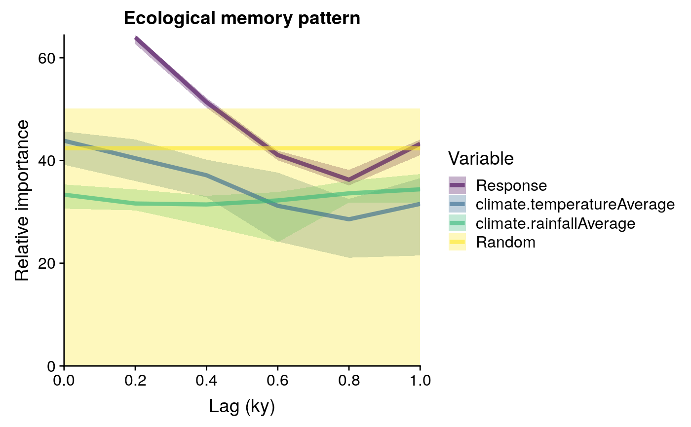

Plots output of computeMemory
plotMemory.RdPlots the ecological memory pattern yielded by computeMemory.
Usage
plotMemory(
memory.output = NULL,
ribbon = FALSE,
legend.position = "right",
filename = NULL
)Arguments
- memory.output
list, output of
computeMemory.- ribbon
logical, switches plotting of confidence intervals on (TRUE) and off (FALSE). Default: FALSE
- legend.position
character string, legend position (e.g., "right", "bottom", "none").
- filename
deprecated, not used. Kept for backwards compatibility.
Examples
#loading data
data(palaeodataMemory)
#plotting memory pattern
plotMemory(memory.output = palaeodataMemory)

#with confidence ribbon
plotMemory(memory.output = palaeodataMemory, ribbon = TRUE)